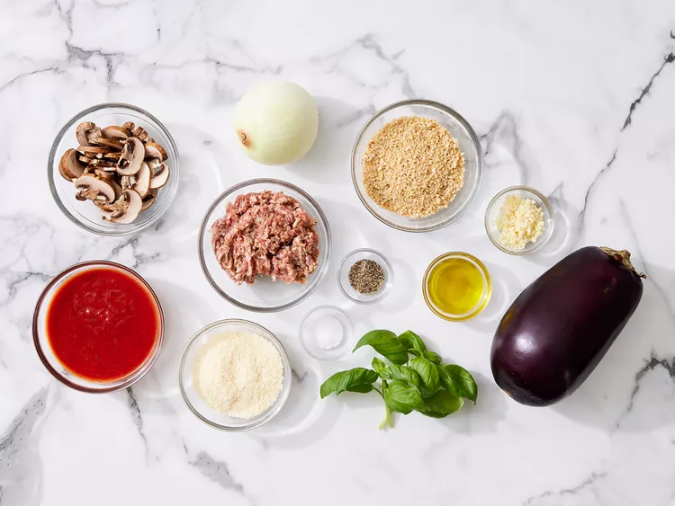
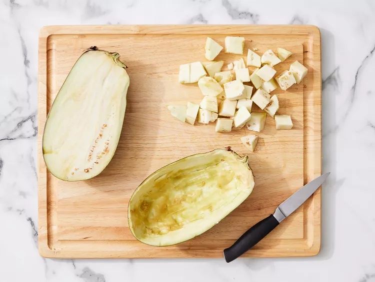
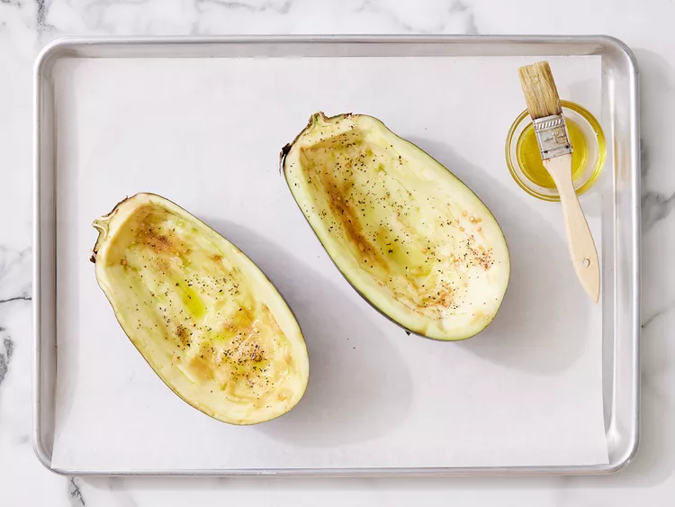
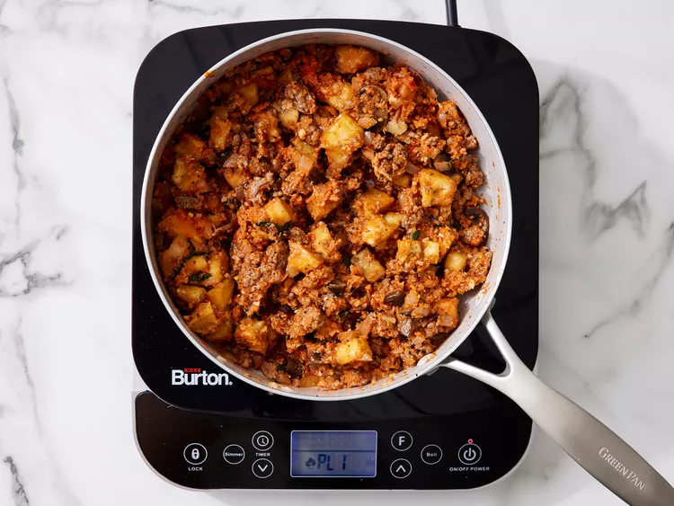
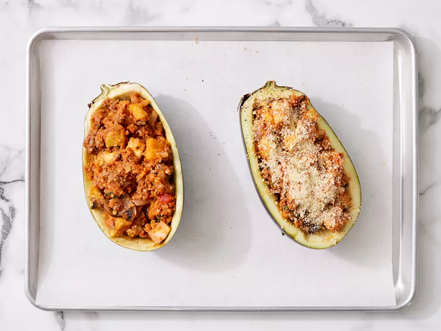
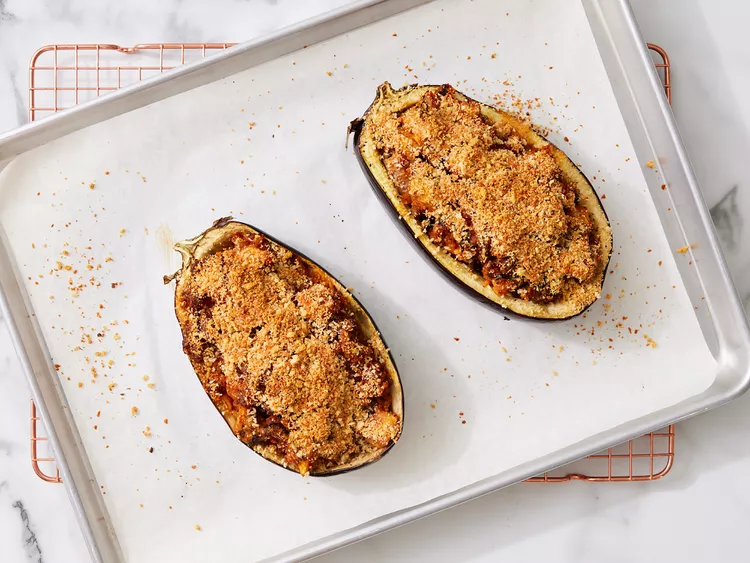

Stuffed Eggplant
This delicious stuffed eggplant with a cheesy top is a must-try recipe! Great as a hearty main but you can buy the mini eggplants and use them for a side dish or appetizer.Ingredients
- 1 (1½ pound) eggplant, halved lengthwise
- 3 tablespoons olive oil, divided
- 1/2 teaspoon salt
- 1/2 teaspoon ground black pepper
- 1/2 pound sweet Italian sausage, casings removed
- 1 cup chopped onion
- 1 cup sliced fresh mushrooms
- 4 cloves garlic, minced
- 2 tablespoons chopped fresh basil
- 1 cup tomato-basil pasta sauce
- 3/4 cup Italian seasoned panko bread crumbs, divided
- 1/2 cup grated Parmesan cheese, divided
Directions
Step 1: Gather ingredients. Preheat the oven to 350 degrees F (175 degrees C). Line a rimmed baking sheet with foil. Step 2: Cut around the edge of the flesh in each eggplant half using a sharp paring knife, leaving a 1/2-inch border. Scoop out flesh using a spoon, leaving 1/2-inch-thick shell; reserve flesh and chop into bite-size pieces. 
Step 3: Brush shells with 2 tablespoons olive oil and season with salt and pepper; set aside. 
Step 4: Heat remaining 1 tablespoon olive oil in a large, deep skillet over medium high heat. Add sausage, onion, mushrooms, and garlic; cook and stir until sausage is evenly brown. Stir in reserved chopped eggplant and basil. Add pasta sauce; cook and stir for 5 minutes. Mix in 1/2 cup of panko and 1/4 cup Parmesan cheese. 
Step 5: Stuff mixture into eggplant shells. Combine remaining panko and cheese in a small bowl; sprinkle over stuffing. 
Step 6: Bake in the preheated oven until eggplant is tender, 45 to 50 minutes. 

Stuffed Eggplant Ingredients
These are the ingredients you’ll need to make this restaurant-worthy stuffed eggplant recipe at home:- Eggplant: You’ll need one eggplant (halved lengthwise) to make two servings.
- Olive oil: Brush the shells with olive oil before seasoning with salt and pepper.
- Seasonings: This stuffed eggplant is seasoned with salt, pepper, fresh garlic, and fresh basil.
- Sausage: Sweet Italian sausage makes this stuffed eggplant a hearty, crowd-pleasing meal.
- Vegetables: An onion and fresh mushrooms lend texture and flavor.
- Pasta sauce: Use store-bought or homemade tomato-basil pasta sauce.
- Bread crumbs: Italian-seasoned panko bread crumbs give the stuffed eggplant a welcome crunch.
- Cheese: For the most delicious results, grate your own Parmesan cheese instead of using the pre-shredded stuff.
How to Make Stuffed Eggplant
You’ll find the full, step-by-step recipe below – but here’s a brief overview of what you can expect when you make stuffed eggplant:- Scoop out the flesh, brush the shells with oil, and season.
- Chop the reserved eggplant flesh into bite-sized pieces.
- Cook sausage, vegetables, and garlic in the remaining oil.
- Stir in the reserved eggplant, basil, and sauce. Mix in some of the panko and cheese.
- Stuff the shells and sprinkle the remaining cheese and panko over the top.
- Bake until the eggplant is tender.